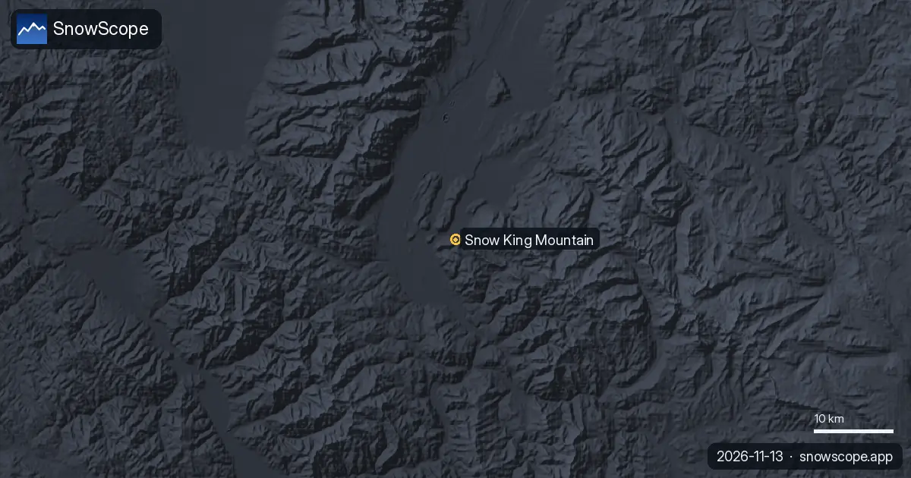

Snow King in December: ski Jackson's town hill from $100
Snow King is Jackson's answer to expensive ski resorts: a steep town hill you can reach on foot, with day tickets from $100 and a December snowpack that climbs reliably through the month. By the 15th, mid-mountain usually reaches 28 in (71 cm), with the summit holding even more.
See the live snow forecast for Snow King Mountain in the SnowScope appSnow depth, powder alerts and the 3D map, free.
What you are skiing
Snow King sits at the edge of downtown Jackson, rising from 6,240 ft (1,902 m) to 7,930 ft (2,416 m). The mapped terrain includes 9 lifts and about 11 mi (18 km) of runs. The hill is steep and direct, favoured by locals who want to skip the drive to bigger resorts.

December snow depth by height
Snow arrives at mid-mountain (7,080 ft / 2,159 m) in mid-October in a typical winter. By 1 December, mid-mountain usually has 19 in (49 cm). Two weeks later, on 15 December, the typical depth jumps to 28 in (71 cm). Christmas Day brings 34 in (86 cm). The top of the mountain (7,930 ft / 2,416 m) climbs higher: 34 in (87 cm) on a typical 15 December, and 40 in (101 cm) by Christmas.
The base, by contrast, lags. On 15 December the typical base depth is only 21 in (54 cm), and lean years (one in ten) can see as little as 14 in (35 cm). Rocks may show at the base in early season, so ride higher when you can.

How often is there snow by mid-month?
On 15 December, 87 % of winters in our record had at least 20 in (50 cm) at mid-mountain; 98 % had it at the top. Even in a lean December, mid-mountain still held 19 in (49 cm) on average. These odds are good enough to plan a trip around.
Cost and passes
An adult day ticket (ages 15–64) starts at $100 online. Busy dates and holidays cost more. Snow King is also an Indy Pass resort: the Indy Base Pass is $419 for adults (two days at each of 300+ resorts with blackout dates), and the Indy+ is $469 without blackouts.
If you are thinking of two days in the valley, buying a single Indy+ pass and picking Snow King and one of the bigger resorts nearby might save money compared to buying daily tickets at each.
How it compares: Grand Targhee and Jackson Hole
Grand Targhee sits over Teton Pass on the Idaho side. By 15 December it typically has 46 in (118 cm) at mid-mountain—far more than Snow King. Every winter in our record saw 20 in (50 cm) or more at Targhee by that date. A day ticket there costs $125 to $180 depending on the date. The drive is worth it if snow depth matters more than budget.
Jackson Hole Mountain Resort, up the valley, had 37 in (93 cm) at mid-mountain on a typical 15 December. Snow King remains the cheapest entry into the valley's skiing and the fastest walk from town.
The long-term trend
Early December snow at mid-mountain has thinned slightly over time. In the first 15 winters of our record (1980–81 to 1994–95), the typical 15 December depth was 35 in (88 cm) and 100 % of winters reached 20 in or more. In the most recent 15 winters (2011–12 to 2025–26), the typical depth was 27 in (69 cm) and the share above 20 in fell to 80 %. Last winter delivered only 17 in (44 cm) on 15 December, well below the median.
Tips for skiers
- Walk from Jackson square to the base and skip the parking lot; the town hill ethos is part of the appeal.
- Aim for mid-mountain and above on early-season days; the base is thin and may show rocks.
- Pair a Snow King day with one at Grand Targhee for a two-resort long weekend cheaper than a single day at the big resort.
- Morning ice is common on north-facing terrain in early December; plan your first run to catch fresh corduroy if you can.
- If a December trip is firm, check the Indy Pass: two days at mid-tier resorts often costs less than a single peak-season ticket.
About these numbers
Resort snow depths are the deepest snow on the resort's upper slopes on the date shown; they are estimates for an area, not a measurement at one point. Forecasts can change. Always read the official avalanche bulletin before going off-piste.
Official avalanche bulletins: Bridger-Teton Avalanche Center
Cite this report
For research, teaching or the press: the numbers and charts are free to reuse under CC BY 4.0 with this citation.
SnowScope (2026), Snow King in December: ski Jackson's town hill from $100, https://snowscope.app/blog/en/2026/11/snow-king-jackson-december-budget-skiing.html, accessed 2026-11-14
SnowScope (Atlas Labs). (2026, November 14). Snow King in December: ski Jackson's town hill from $100. SnowScope snow reports. https://snowscope.app/blog/en/2026/11/snow-king-jackson-december-budget-skiing.html
BibTeX
@misc{snowscope2026snowkingjacksondecemberb,
author = {{SnowScope (Atlas Labs)}},
title = {Snow King in December: ski Jackson's town hill from $100},
year = {2026},
month = nov,
howpublished = {\url{https://snowscope.app/blog/en/2026/11/snow-king-jackson-december-budget-skiing.html}},
note = {Published 2026-11-14 19:27 UTC; accessed 2026-11-14}
}· CC BY 4.0 · Methods, data and tools →
Snow King Mountain: snow and temperature by height, this winter vs last (tools) →
Follow Snow King Mountain
Free: a message when fresh snow is coming, and the forecast every morning.
More snow reports

About 28 inches of new snow at Mammoth and 26 inches at June Mountain on 18-19 November. What the storm is, how it ranks against past winters, and the best days to go.

Wolf Creek measured 20 in (51 cm) on November 11, 2026, tracking 115% of normal while vastly outpacing last year's thin early start.